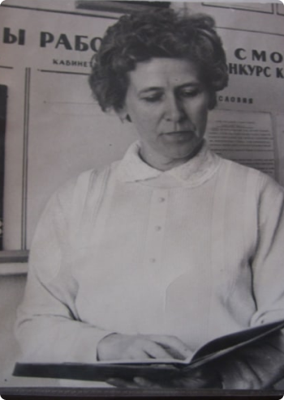

ГРАБЧИКОВА ЕЛЕНА ФОМИНИЧНА

Грабчикова Елена Фоминична. Ветеран Великой Отечественной войны
Родилась в 1925 году в д. Матецкия Узденского района Минской области. В 1945 году окончила исторический факультет БГУ. С 1971 года - учитель в минской средней школе №16. Во время Великой Отечественной войны являлась связной партизанских отрядов им. Г. Котовского, "Патриоты Родины", бригады им. Ворошилова.
Имеет 9 наград, среди которых:
— Знак "Ветеран войны 1941-1945 гг."
— Нагрудный знак "Отличник народного образования"
— Медаль "Ветеран труда"
— Юбилейная медаль "60 лет освобождения Беларуси от немецко-фашистских захватчиков"